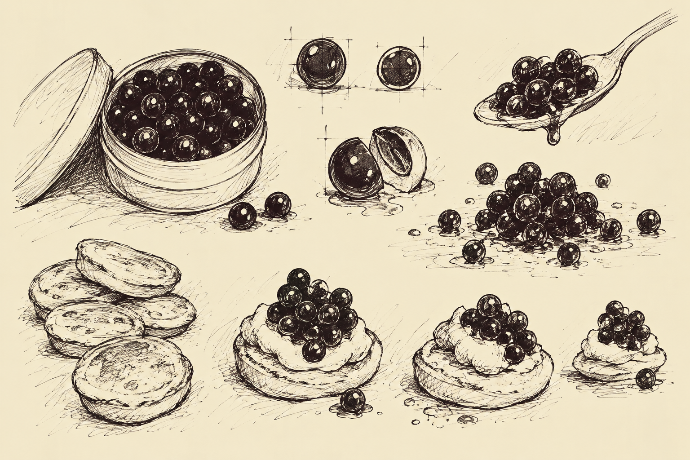

Entry XII
The Offsite Journal of Elias Grimsby
The hope of yesterday, the LaCroix of tomorrow
I have continued my search for Subject H-31.
The residents of Maine remain a peculiar people.
However...
I believe I have located a witness.
A young boy was standing near a collection of unusual objects.
He appeared to be eating a sandwich.
Upon questioning, he informed me that a strange creature had taken another sandwich from him.
The description was consistent with Subject H-31.
I have recorded the following interview.
GRIMSBY: You witnessed the creature?
BOY: Ayut.
GRIMSBY: And it took one of your sandwiches?
BOY: Ayut.
GRIMSBY: And what was contained within this sandwich?
BOY: Peanut buttuh and jelly.
GRIMSBY: Peanuts, butter, and gelatine?
BOY: Ayut.
GRIMSBY: Might I sample your sandwich?
BOY: Ayut.
I sampled the sandwich.
For peanuts being a contributing part of the architecture, this resulting sandwich is remarkably mooshy.
GRIMSBY: And you're quite certain there are peanuts in this?
BOY: Reckon so.
GRIMSBY: The flavor is undoubtedly peanut but the texture is startling.
BOY: Ayut.
GRIMSBY: Your mother must put considerable work into rendering peanuts in a way that they lose structural integrity.
BOY: She gets it from a jar.
GRIMSBY: A chemical?
BOY: Reckon the peanut buttuh.
GRIMSBY: Astounding.
The boy took another bite.
BOY: Ayut.
I returned my attention to the investigation.
GRIMSBY: Now, you say the creature took another of these sandwiches?
BOY: Ayut.
GRIMSBY: And it consumed the sandwich?
BOY: Reckon it did.
GRIMSBY: The entire sandwich?
BOY: Ayut.
GRIMSBY: And these peculiar objects were found where the creature had been standing?
BOY: Ayut.
I examined the objects.
They were small, spherical, and rather dark.
They appeared remarkably similar to fish roe.
Most curious.
GRIMSBY: Are there fish nearby?
BOY: In the watah.
GRIMSBY: Naturally. But have you observed any fish in this particular location?
BOY: Nope.
GRIMSBY: I see.
The boy continued eating.
I collected a sample of the spheres.

Upon closer examination, the objects appeared to possess a delicate outer membrane.
I have encountered similar material during my earlier investigations of Subject H-31.
I shall refrain from sampling it.
The Institute is considerably better equipped for such examinations.
GRIMSBY: And you are quite certain these objects appeared after the creature departed?
BOY: Ayut.
GRIMSBY: Fascinating.
BOY: Ayut.
I thanked the boy for his assistance.
He offered me the remainder of his sandwich.
I declined.
I have already collected a sufficient quantity of material for examination.
I shall have the specimens returned to the Institute.
A more thorough examination is warranted.
Pending tests.
The search continues.